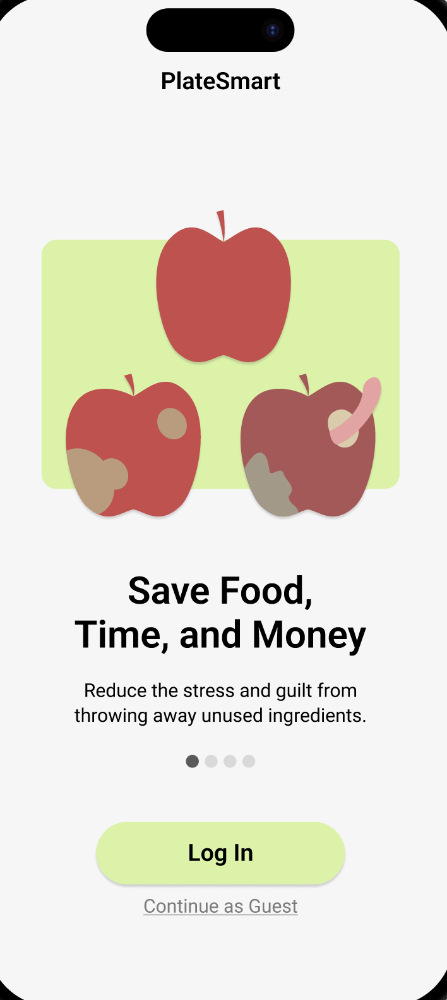
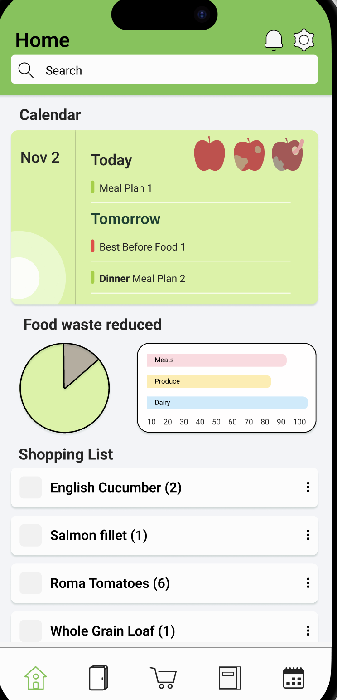
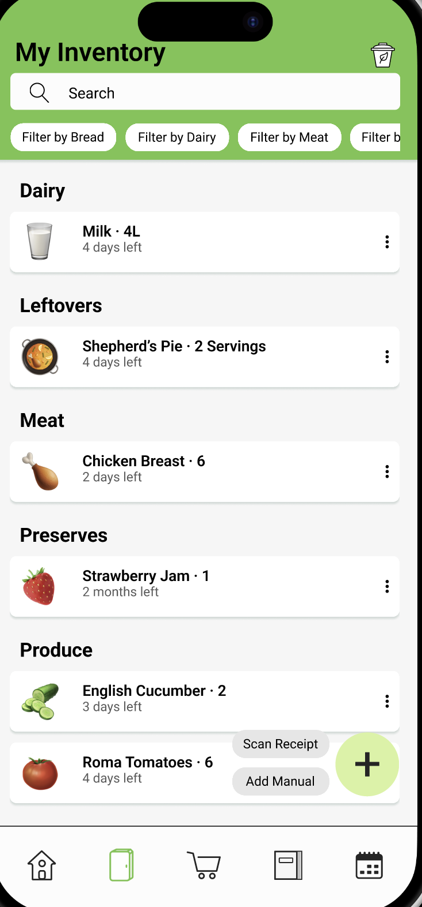
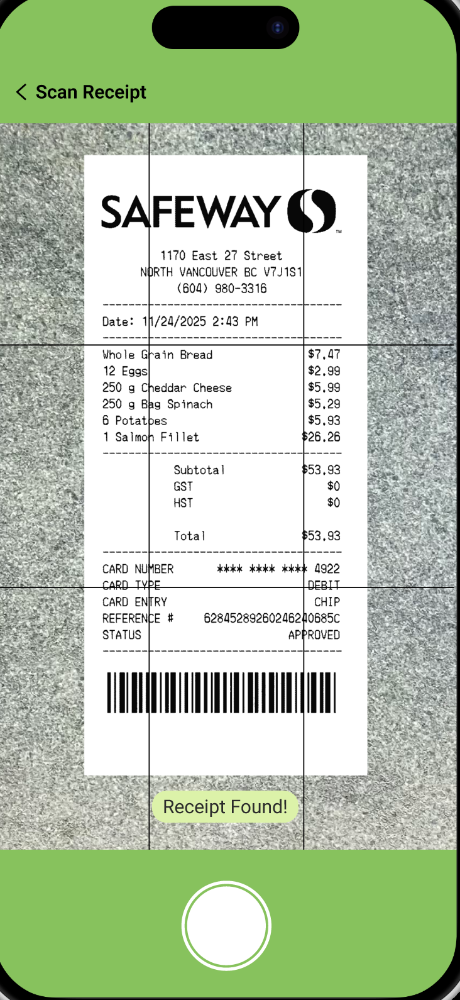
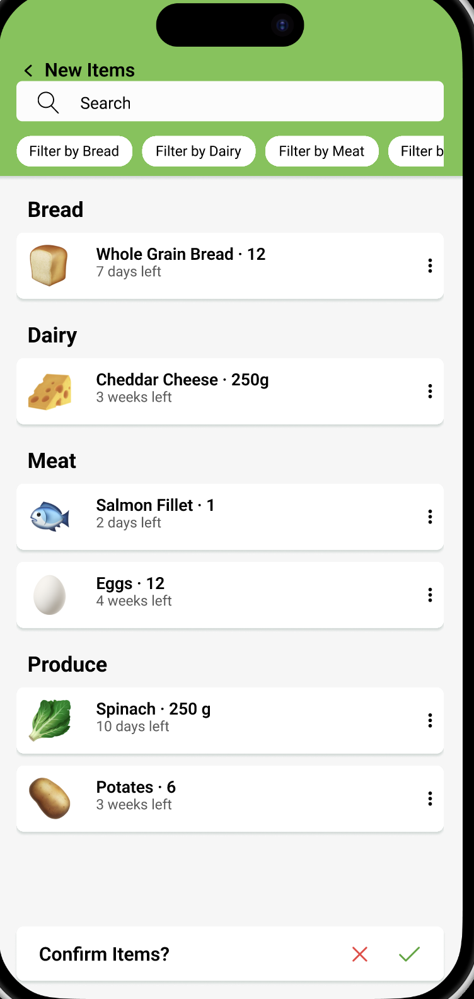
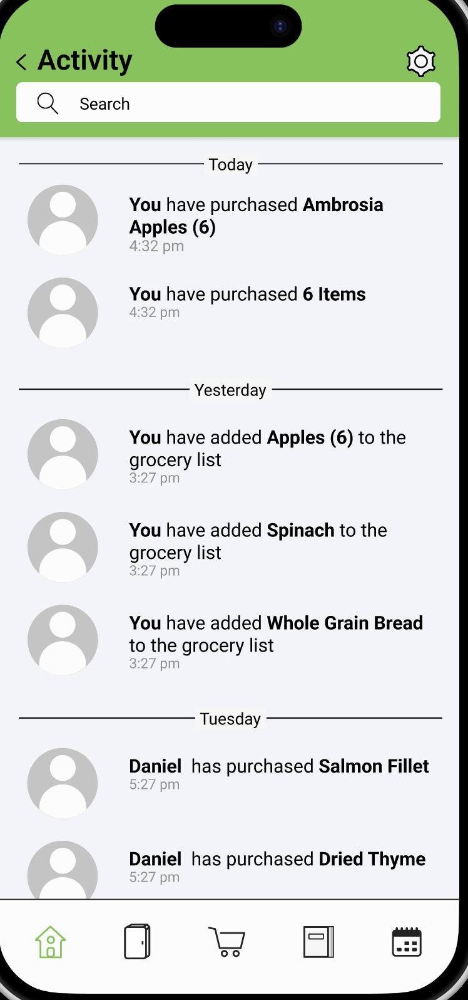
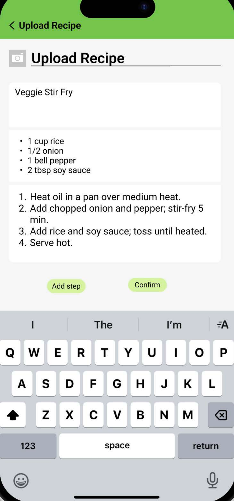
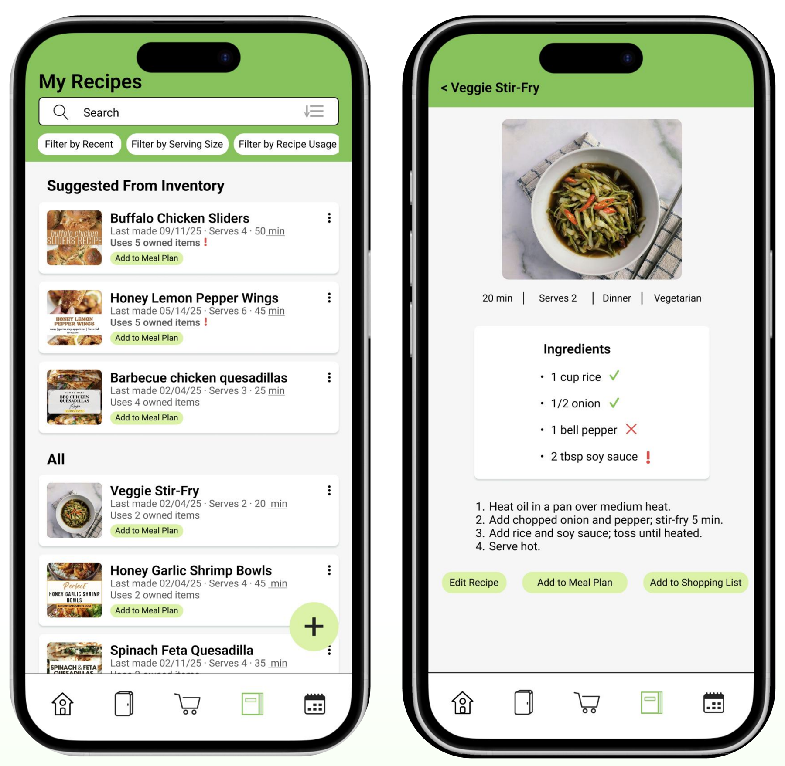

PROJECT 4
PlateSmart App
A group UI/UX project designing PlateSmart, a mobile app that helps households plan meals, track food, and reduce waste. Created in Fall 2025 in Figma by a team of four, the project focused on making it easier to buy more intentionally and take the daily stress out of deciding what to eat.


Project Overview
An app to make reducing food waste feel simple
Our group chose the design domain of Environment and Sustainability, with food waste as our context. From that, we designed PlateSmart, a meal planning and food tracking app that brings an inventory, shopping list, recipes, and calendar together in one place.
The app is designed for single-person households as well as households with multiple people.
Group Project & My Contribution
A team of four, with my focus on recipes and introductory screens
As a group of four, we worked through discovery, personas, experience maps, wireflows, a style guide, and the final UI together.
My main contribution was designing the recipe screens, including the additional recipe screens added later in the project, along with introductory pages such as the opening screens. I also suggested the app name, PlateSmart, during ideation.
Research & Process
Understanding who wastes food, and why it feels so bad
We started by looking at articles and online discussions about food waste. We then created two personas, Adam (47), a lawyer who cooks for a family of five, and Sofia (21), a university student.
For each persona, we mapped a typical weekday with and without the app to see where PlateSmart could help.
Goal
Reduce food waste without adding another chore
Our design goals were to reduce the guilt and stress of throwing food away, and to keep people up to date on their inventory, best before dates, and meal plans without the reminders feeling like a chore. We also wanted the app to be collaborative and easy to search.
We wanted visuals that keep people engaged too, like the decaying apple icon that adds a small reminder of food waste.
Key Screens
Inventory, receipt scanning, and household activity
The inventory groups food by category with filters, and new items can be added by scanning a receipt or entering them manually. After a scan, the app lists the new items with a best before time for the user to confirm.
The activity screen shows what has been bought and added, so people in the same household can stay in sync.




My Recipe Screens
Adding, browsing, and using recipes
The recipe screens let people upload or scan a recipe, browse their saved recipes, and add a recipe to the meal plan or the shopping list.
These are the screens I designed, including the added recipe screens that made the flow feel more guided.


Design Decisions
Calm colour, familiar layouts, and less typing
We chose green because it suggests freshness and sustainability, and it feels calm as an accent colour for actions. We referenced calendar and reminder apps because people already understand their layouts. Icons stay simple and black, with colour saved for widgets and food icons, and the navigation icons turn green on the page you are on.
Wherever we could, we added scanning, such as scanning a receipt to fill the inventory, so people type less.
Refinement
Testing and critique shaped the final design
After user tests and critique, we reorganised the layout so people could switch between current and saved shopping lists more easily, and we aligned buttons and balanced spacing for a more cohesive look. We also simplified task flows that took testers too long.
Other changes included clearer week and month controls in the calendar, removing a duplicate calendar screen, adding more guided recipe screens, and adding a compost bin screen to show what expired.
Feedback & Reflection
Growing in Figma and in group communication
Working on PlateSmart helped me feel more confident designing screens in Figma, and it taught me how much clear communication matters in a group project.
I focused on delivering careful, dependable work on time, and I am proud of the recipe screens I contributed to the final app.